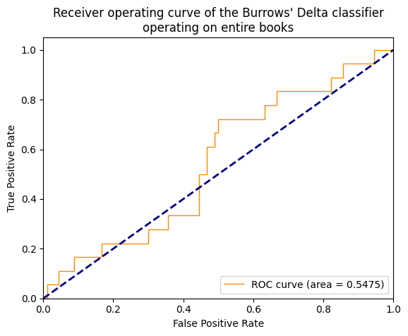
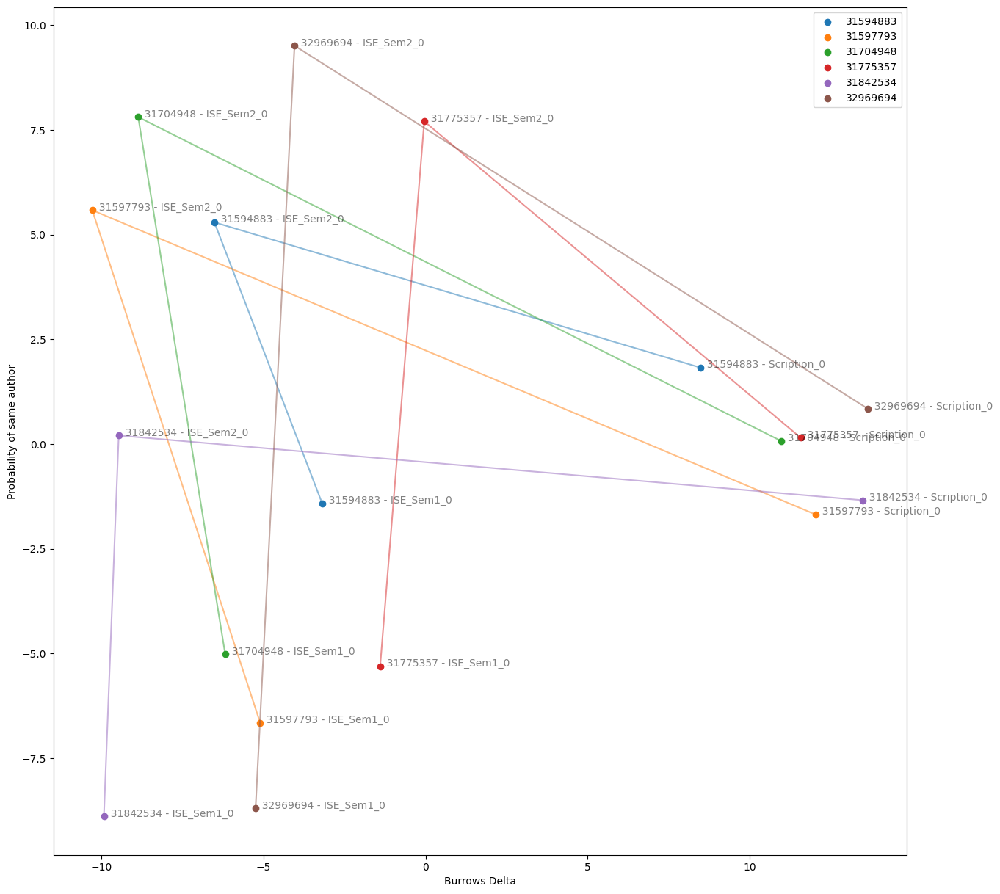

| Burrow's Delta Score for Source Document | Click Here |
| Author Probability | Click Here |
ROC (Receiver Operating Characteristic) Curve
The Receiver Operator Characteristic (ROC) curve is a graphical plot that illustrates the
diagnostic ability of a binary classifier system as its discrimination threshold is varied.
Classifiers that give curves closer to the top-left corner indicate a better performance.
The closer the curve is to the 45 degree diagonal of the ROC space, the less accurate the test is.
An AUC score of 0.5 means that a classifier is performing badly, and a 1.0 score is a perfect score.
The AUC score is on the bottom right corner of the graph.
PCA-Derived Coordinates
The Principal Component Analysis (PCA) curve is a cluster of all the authors and their documents.
It is used to visualise the sylistic similarities between the documents in the corpus.
The closer the documents are to each other the more similar they are.